Source: Dr. Amir workshop — Med workshop 2 - 2026 / CLASS 5 UNWELL (Aug 2026 drop) · Specialty: general_practice
A super-acute 'unwell' case: a patient becomes suddenly unwell and is too unstable to talk, so the history is taken from a relative (raising confidentiality and consent issues). Vital signs in the stem already indicate an unstable patient. The diagnosis to explain to the relative is anaphylaxis. The station tests the ability to formulate a differential for sudden collapse and to recognise and manage anaphylaxis.
Introduce yourself and confirm the patient has consented to the relative discussing her condition. In an emergency, confidentiality rules are applied differently to allow urgent care. Then use an open-ended question: 'Tell me what has happened.'
Cardiovascular: preceding chest pain, palpitations, dizziness.
Neurological: loss of consciousness, limb weakness, numbness, slurred speech, gait/balance problems.
Respiratory: cough, shortness of breath, noisy breathing, recent long travel (PE), choking episode (obstructed airway) - relative reports she choked on food then collapsed.
Infection: fever/chills, sick contacts, travel.
Anaphylaxis is a multi-system allergic reaction affecting skin, respiratory, cardiovascular and GI systems.
Consider hypoglycaemia as a differential (missed meals; she is on insulin).
From the examiner - general appearance (level of consciousness, rash, audible noisy breathing/stridor and wheeze); vital signs including temperature and oxygen saturation. Quick neurological, cardiovascular, respiratory and abdominal examination (bruising - Cullen/Grey Turner sign, pulsatile mass for AAA). Anaphylaxis-specific: lip/tongue swelling, stridor, rash, visible insect-bite marks. Office tests: blood sugar level and urine dipstick. Findings: insect bite on the neck and wheeze - confirming anaphylaxis.
Explain to the relative: a severe allergic reaction (anaphylaxis), most likely triggered by an insect bite. Reasons: rapid onset, wheeze/noisy breathing, and the insect-bite mark on the neck.
Management (anaphylaxis is a clinical diagnosis - treat immediately):
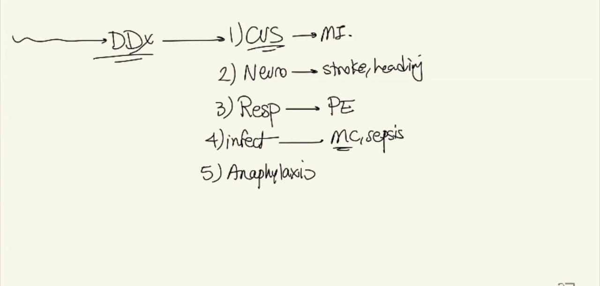
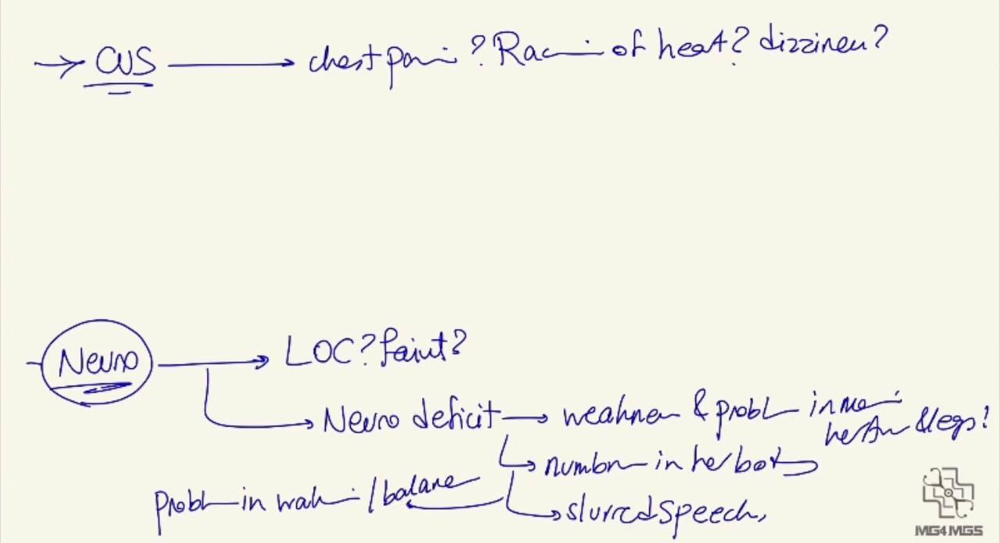
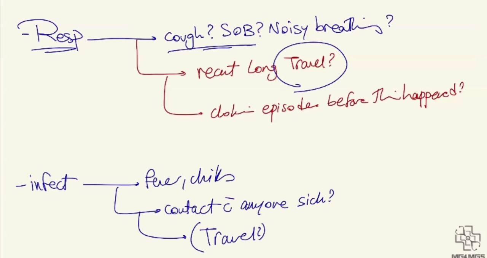
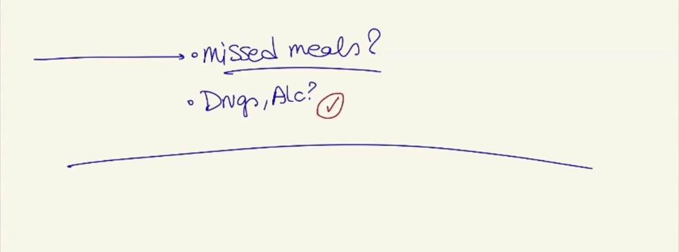
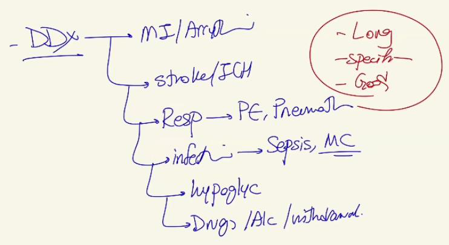
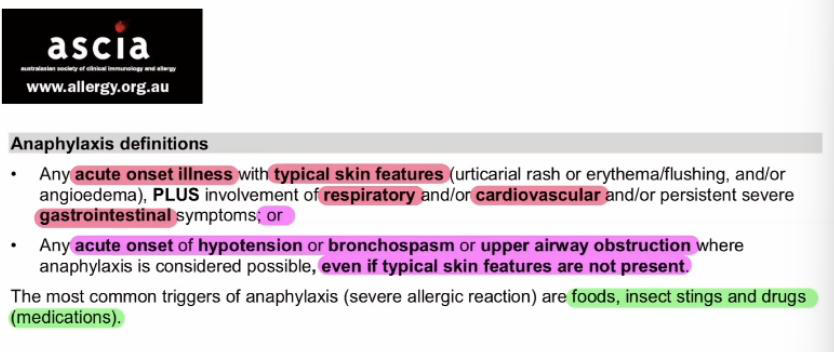
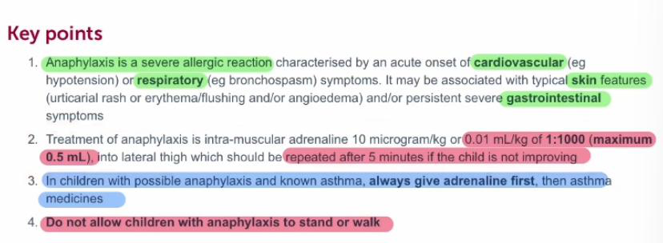
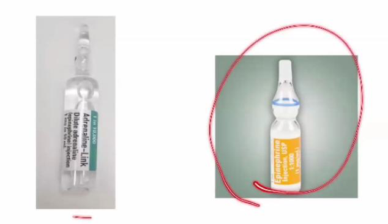
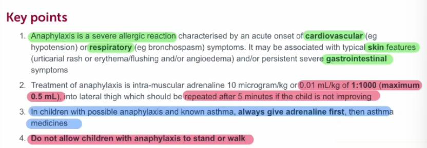
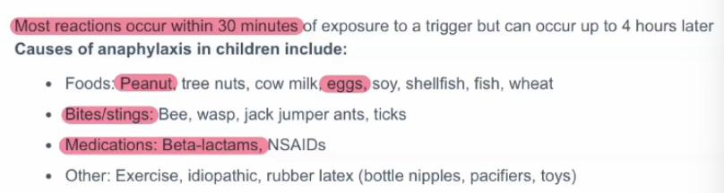
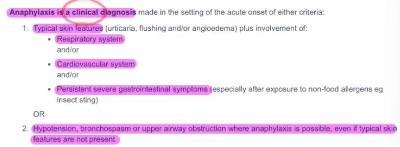
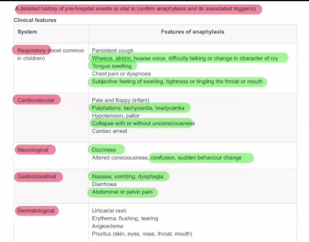
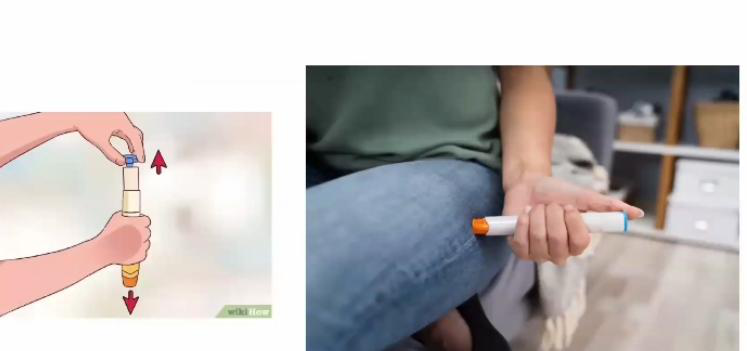
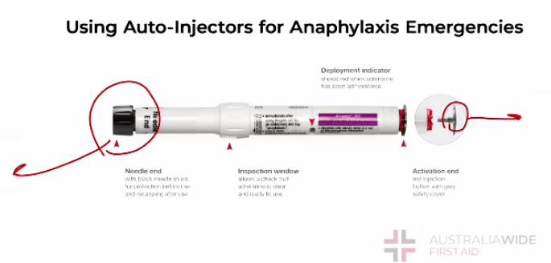
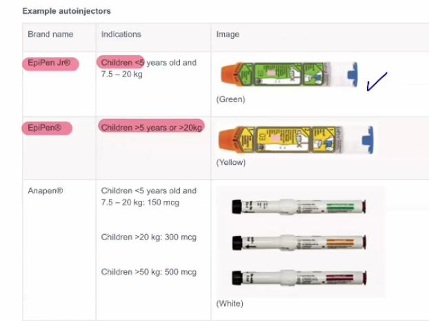
Reviewed by: history-taking-expert (Australian clinical supervisor) · fact-checked against the irStudy medical textbook RAG index.